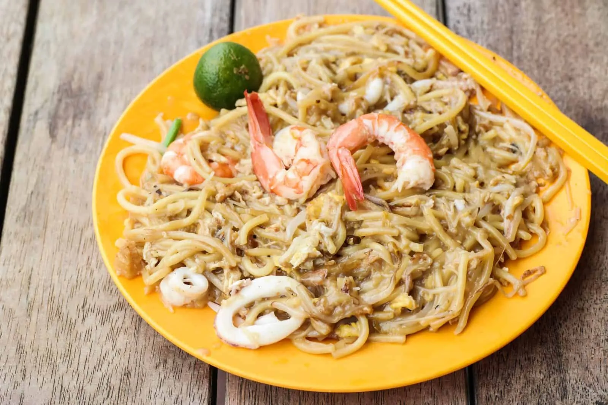

Recipe for Hokkien Mee

Ingredients:
- 8 ounces (225g) Hokkien noodles
- 2 tablespoons cooking oil
- 3 cloves garlic, minced
- 1/2 pound (225g) shrimp, peeled and deveined
- 1/2 pound (225g) boneless chicken, sliced
- 2 cups bean sprouts
- 2 large eggs, lightly beaten
- 2 tablespoons soy sauce
- 1 tablespoon oyster sauce
- 1/2 teaspoon dark soy sauce (optional, for color)
- 1/2 teaspoon sugar
- Salt and pepper to taste
Instructions:
-
Boil the Hokkien noodles according to the package instructions until
they are cooked but still slightly firm. Drain and set aside.
-
In a wok or large skillet, heat the cooking oil over medium-high heat.
Add the minced garlic and sauté until fragrant.
-
Add the shrimp and chicken to the wok. Stir-fry until they turn pink and
are almost cooked through.
-
Push the shrimp and chicken to one side of the wok, and pour the beaten
eggs into the other side. Scramble the eggs until they are partially
set.
-
Combine the eggs with the shrimp and chicken. Add the drained Hokkien
noodles and bean sprouts to the wok. Toss everything together.
-
In a small bowl, mix together the soy sauce, oyster sauce, dark soy
sauce (if using), sugar, salt, and pepper. Pour this sauce over the
noodles and stir-fry for a few more minutes until everything is well
coated and heated through.
- Serve the Hokkien Mee hot and enjoy!
Back to homepage